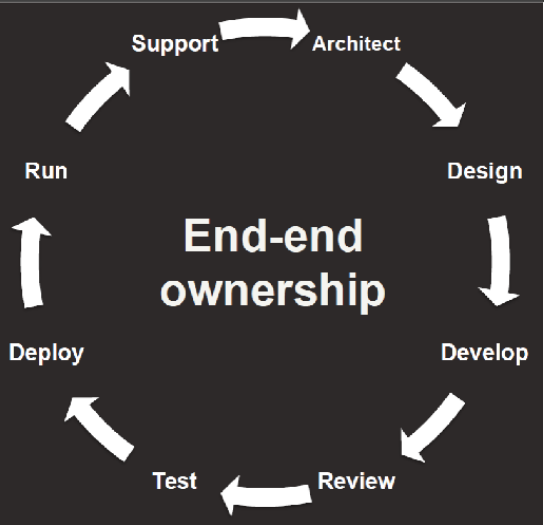
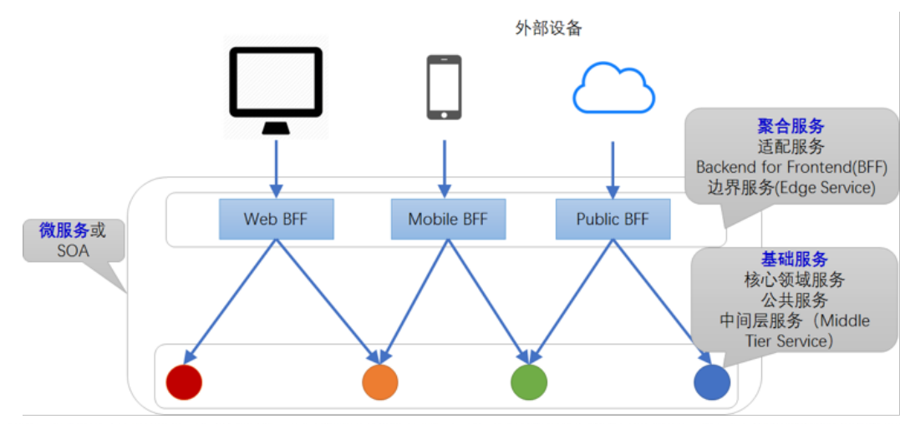
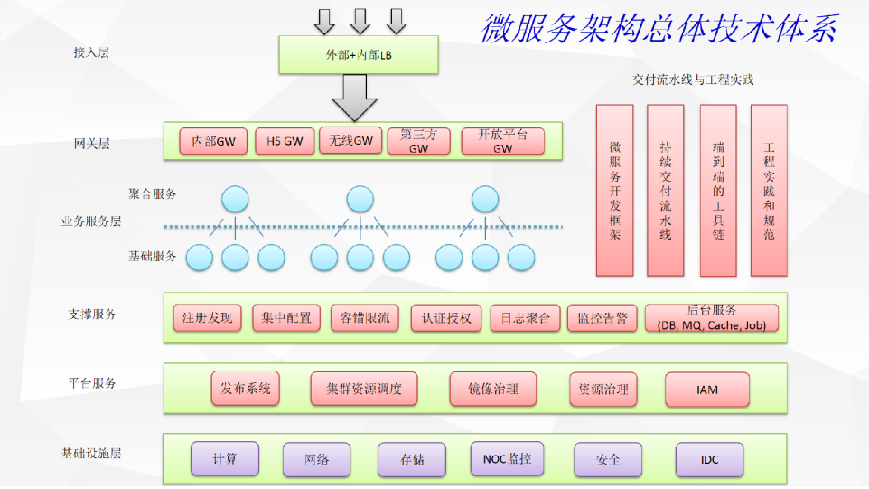
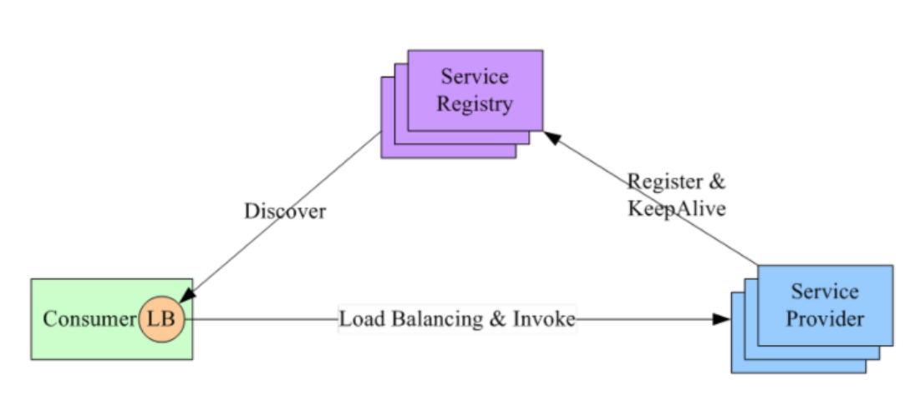
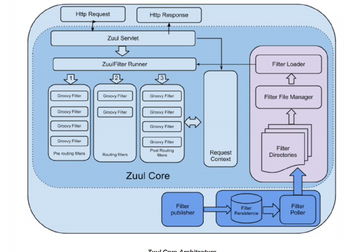
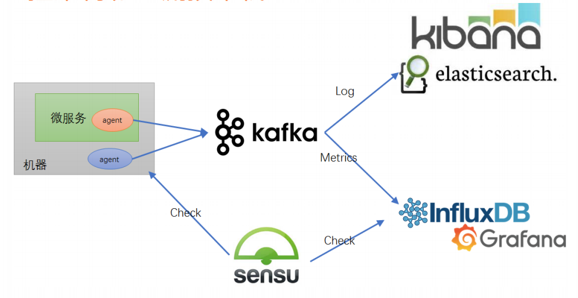
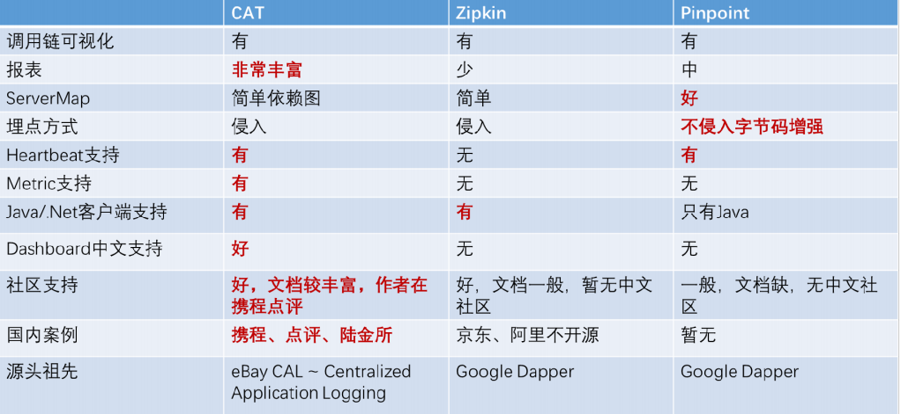
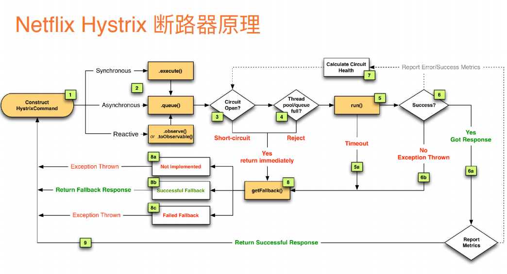
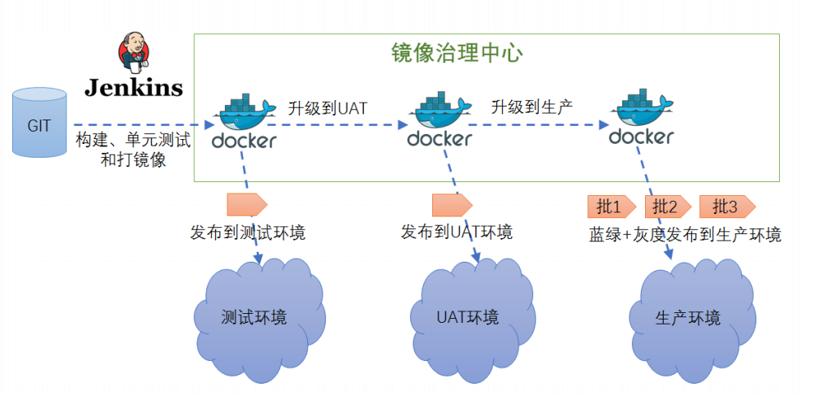
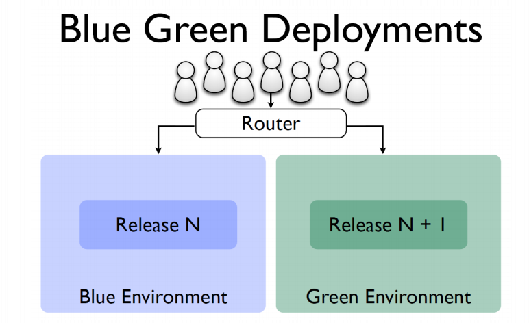

极客时间学习笔记， 微服务架构核心20讲
作者：杨波 （拍拍贷框架研发部总监，资深架构师，微服务技术专家）
微服务架构核心20讲 https://time.geekbang.org/course/intro/66
1 什么是微服务架构
微服务是一种架构风格（如MVC）
微服务的六个特点：
- 一组小的服务
- 独立的进程
- 轻量级通信
- 基于业务能务
- 独立部署
- 无集中式管理 （这里指的是可以用不同的技术栈，不同的存储）
微服框架的定义者马丁福勒：他的一篇博客：
马丁福勒的文章 https://www.martinfowler.com/articles/microservices.htm
微服务定义
基于有界上下文的 松散耦合面向服务的架构。
２ 架构师如何权衡微服务的利弊
开发者的一个重要职责就是权衡
利:
- 强模块化边界
- 可独立部署
- 技术多样性
弊:
- 分布式系统复杂性
- 最终一致性
- 运维复杂性
- 测试复杂性
分布式系统带来的一个挑战就是取终一致性。
３ 康威法则和微服务给架构师怎样的启示
设计系统的组织，其产生的架构设计等价于组织间的沟通结构。
其实就是要规避，多个团队去支持一个服务模块。应该拆解成一个团队支持一个小服务，多个小服务组织成一个大服务（或系统）。
４ 企业应该在什么时候开始考虑引入微服务
微服务的适用性:

Monolth 单块服务
Microservice 微服务
微服务 有基础模块和平台的要求，所以企业刚开始时微服务并不能有高的生产力。
所以一般以单块服务开始。适用于小企业，微服务更加适合于中大型企业。
中间的交点，就是企业要考虑从单块服务切换成微服务的时候了。
业务模块的复杂性已经达到某个点了。 点的把控要架构师应该思考的问题、一般100人的团队可以考虑了这个问题了。
一般业务开始以单块服务优先。如果研发效率开始下降了。再做优化，向微服方向转变。
如果一开始就以微服开始，可能在设计上会更复杂。
架构是演化出来的。
不可能一步到位， 所以一般是单块优先原则，然后不断迭代，不断的微服化。
5 什么样组织架构更适合微服务
组织架构：

左边是比较传统的组织架构。产品从左到右流程走，可能出现的问题，反馈比较慢，对业务支持比较慢。沟通成本比较大。
右边是比较合适微服务的组织架构， 每一个团队（基于微服务的跨职能的团队），有开发，有产品，有测试，团队都支持自己的微服务。交付的产口是平台，对外提供API 接口支持多样的业务。

在团队内做内部循环。端对端的开发。
谁开发的，谁构建，谁支持。
6 如何理解阿里巴巴提出的微服务
中台战略和微服务的关系 下图：一线互联网主流的组织架构。 微服的标准的参考架构。

业务中台和技术中台 统称为大中台。支撑业务前台。中台越强大，前台越发展越快。
PaaS 和 核心业务层是和微服务相关的。这一些基本都可以用微服务来实现。
IaaS：Infrastructure-as-a-Service（基础设施即服务）
PaaS：Platform-as-a-Service（平台即服务）
7 如何给出一个清晰简洁的服务分层方式
大致的服务分层图：

SOA Service-Oriented Architecture （面向服务的架构）
基础服务： 也有其他的说法。如：核心领域服务、中间层服务、公共服务。
聚合服务： 对基础服务的聚全和裁剪，以达到满足业务的需求，提供给外部调用。
８ 微服务总体技术架构体系是怎么设计的
微服务总体架构体系图：

- 接入层： 外部和内部接入，主要把流量接入进来，做负载均衡。
- 网关层： 反向路由，限流，安全，跨横切面的功能。
- 业务服务层： 可分为：聚合服务，基础服务。
- 支撑服务： 后台服务。
- 平台服务： 可以是一些管理系统。
- 基础设施 由运维团队运维。
网关层、业务服务层、支撑服务、平台服务。 这四层可以和微服务相关的，
9 微服务最经典的三种服务发现机制
消息者应该怎么去发现生产者。三者主流的模式：
1 通过DNS 访问LB，LB（负载均衡）。

2 LB功能放到Consumer内， service 注册到 Service Registry上。有定时心跳发到注册中心，Consumer 定期的同步 Service Registry的信息。

3 结全前面两种方式， 在Consumer的主机上也布置一个LB。 LB会定期同步Service Registry的信息。 运维成本比较高一点。

10 微服务 API 服务网关（一）原理
API Gateway
屏蔽掉服务内部的逻辑，希望外部访问看到是统一的接口。

下面这个图 接入网关的前面有一层LB（负载均衡）如果是网关可以是无状态的，这样方便扩展，单点挂掉时，可以摘除。对系统的稳定性很重要。
网关主要的功能
- 反向路由 将外部的请求换成内部调用。
- 认证安全 防刷 防爬虫。
- 限流熔断 处理可能会突发流量。
- 日志监控 进行访问访问审计，监控流量。
一般不要把过多的业务逻辑写在网关当中。

11 服务 API 服务网关（二）开源网关 Zuul
核心: Servlet 和 Fitter Runner 过滤器： 前置过滤器， 路由过滤器，后置过滤器
过滤器开发，可以通过脚本开发。开发完后上传到过滤器目录中， 被扫描后加到Filtter Runner中。
各个Fitte 共享数据通过 Request Context 来实现。

过滤链的流程：

前置路由过滤器
路由过滤器
后置路由过滤器
12 跟 Netflix 学习微服务路由发现体系
netflix 有两个比较重要的支撑服务
- 服务注册中心 Eureka
- 网关 zuul

13 集中式配置中心的作用和原理是什么
为什么要引入配置中心呢？ 小企业一般是写在配置文件中的，不方便管理。响应比较慢。无法审计。配置中心可能解决这些问题。
什么可做配置呢？
- 业务开关
- 调用/响应超时
- 限流
- 连接字符串
- 动态参数
Svr 更新配置有两种方式 拉和推。

携程的Apollo配置中心:

github : https://github.com/ctripcorp/apollo
14 微服务通讯方式 RPC vs REST
RPC：Remote Procedure Call 远程过程调用
REST ：Restful

15 微服务框架需要考虑哪些治理环节
一个公司的微服务多了，就要需要考虑治理。
软负载： 蓝绿发布， 灰度发布
Metrics: 服务的调用量， 耗时监控。
调用链埋点： 方便快速定位问题，
契约生成代码： 定义结构体可自动生成json格式， vscode 有插件。

阿里巴巴微服务治理生态：Dubbo http://dubbo.apache.org/en-us/
16 微服务监控系统分层和监控架构
五个层次的监控
- 基础设施监控
- 系统层监控
- 应用层监控 url sevice mysql cache 可用率，性能， qps
- 业务层监控 核心指标监控 登录注册
- 端用户体验监控

日志 监控 对应Elasticsearch
metrics 监控
健康检查
调用链监控
告警系统
比较典型的监控架构，大部分公司的流程

比较大的队列用kafka 。
Nagios 健康检测工具。
ELK ELK是Elasticsearch、Logstash、Kibana三大开源框架首字母大写简称。
17 微服务的调用链监控该如何选型
调用链的监控 谷歌2010年提出来的。
通过 Span来跟踪， RootSpan ChildSpan 跨进程时 会有Trace di + parant span id

三个主流调用链监控系统的比较：

18 微服务的容错限流是如何工作的
Netfiix Hystrix 具有熔断 隔离 限流 降级的功能 。

说明：
- 3 Cirult OPen 判断是否可以熔断， 是则执行 getFAllBack() 降级处理函数
- 5 run() 超时 也执行降级处理函数。
- 6 不成功也 执行处理函数 。
- Calculate Cirult Health 就是在正常执行成功后计算是否需要熔断。
19 Docker 容器部署技术 & 持续交付流水线
docker 容器治理就是解决：环境不一致的问题。把依赖的所有包都打在镜像中。
统一、标准化的交付流水线。
UAT 环境： User Acceptance Test （用户验收测试）

发布模式： 蓝绿布置，灰度发布（金丝雀发布）。
金丝雀发布 滚动发布：

20 容器集群调度和基于容器的发布体系
资源调度框架 Mesos 架构

基于容器的云发布体系